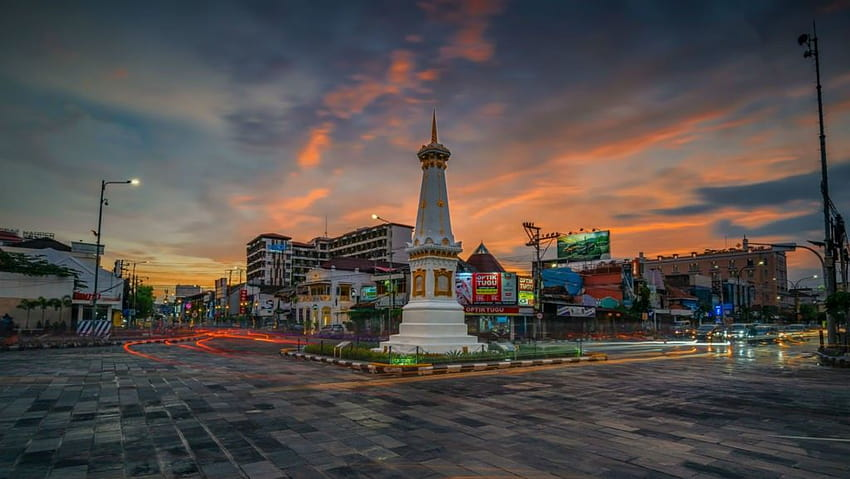
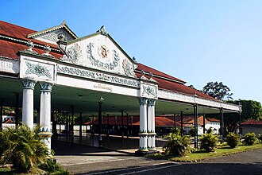

Yogyakarta is the capital city of the Special Region of Yogyakarta in Indonesia, in the south-central part of the island of Java. As the only Indonesian royal city still ruled by a monarchy, Yogyakarta is regarded as an important centre for classical Javanese fine arts and culture such as ballet, batik textiles, drama, literature, music, poetry, silversmithing, visual arts, and wayang puppetry Renowned as a centre of Indonesian education, Yogyakarta is home to a large student population and dozens of schools and universities, including Gadjah Mada University, the country's largest institute of higher education and one of its most prestigious.
Yogyakarta is the capital of the Yogyakarta Sultanate and served as the Indonesian capital from 1946 to 1948 during the Indonesian National Revolution, with Gedung Agung as the president's office. One of the districts in southeastern Yogyakarta, Kota, was the capital of the Mataram Sultanate between 1587 and 1613. The city's population was 388,627 at the 2010 census,and 373,589 at the 2020 census; the official estimate as of mid-2023 was 375,699, composed of 182,840 men and 192,859 women. The greater metropolitan area includes the city of Magelang and 65 districts across Sleman, Klaten, Bantul, Kulon Progo and Magelang regencies and was home to 4,010,436 inhabitants in 2010. Yogyakarta has the highest HDI (Human Development Index) of all Indonesian regencies and cities, with a score of 0.887.
Etymology
Yogyakarta is named after the Indian city of Ayodhya, the birthplace of the eponymous hero Rama from the Ramayana epic. Yogya means "suitable; fit; proper", and karta means "prosperous; flourishing". Thus, Yogyakarta means fit to prosper". In colonial era correspondence, the city is often written in the Javanese script as ꦔꦪꦺꦴꦒꦾꦏꦂꦠ, read as /ŋajoɡjakarta/ with the added prefix nga-. In the orthography of the time, the proper name was spelt with the Latin alphabet as "Jogjakarta". As the orthography of the Indonesian language changed, the consonant /j/ came to be written with ⟨y⟩, and the consonant /dʒ/ with ⟨j⟩. Personal and geographical names however, were allowed to maintain their original spelling according to contemporary Indonesian orthography. Thus, the city can be written as "Yogyakarta", which is true to its original pronunciation and the Javanese script spelling, or "Jogjakarta", which is true to the old Dutch spelling and reflects popular pronunciation today, but differs from the original Ayodhya etymology. One may encounter either "Yogyakarta" or "Jogjakarta" in contemporary documents.
Early history
Mataram Kingdom (8th–10th century CE) According to the Canggal inscription dated 732 CE, the area traditionally known as "Mataram" became the capital of the Medang Kingdom, identified as Mdang i Bhumi Mataram established by King Sanjaya of Mataram. The inscription was found in a Hindu temple in Central Java, 40 km away from Yogyakarta and 20 km away from the giant Borobudur temple complex. This Hindu temple itself was on the border between the area of the Hindu Sanjaya dynasty and the area of the Buddhist Shailendra dynasty.
The archipelago's strategic location fostered inter-island and international exchange with civilisations from the Indian subcontinent and mainland China, profoundly influencing Indonesian history and culture through trade. By the 7th century CE, the Srivijaya naval kingdom thrived on trade, adopting Hindu and Buddhist influences. The 8th to 10th centuries saw the rise and decline of the Buddhist Sailendra and Hindu Mataram dynasties, leaving monumental legacies like the Borobudur and Prambanan temples. After the failed Mongol invasion of Java in the late 13th century,the Hindu Majapahit kingdom rose to dominate much of the archipelago under Gajah Mada's leadership—a period often called the "Golden Age" of Indonesian history. Islam arrived in the 13th century in northern Sumatra, and following gradual adoption in other islands, it became the dominant religion in Java and Sumatra by the 16th century, blending with pre-existing traditions to form a distinct Islamic culture, particularly in Java.
Mataram became the centre of a refined and sophisticated Javanese Hindu-Buddhist culture for about three centuries in the heartland of the Progo River valley, on the southern slopes of Mount Merapi volcano. This time period witnessed the construction of numerous candi, including Borobudur and Prambanan.
Around the year 929 CE, the last ruler of the Sanjaya dynasty, King Mpu Sindok of Mataram, moved the seat of power of the Mataram Kingdom from Central Java to East Java and thus established the Isyana dynasty. The exact cause of the move is still uncertain; however, a severe eruption from Mount Merapi or a power struggle with the Sumatra-based Srivijaya kingdom probably caused the move.
Historians suggest that some time during the reign of King Wawa of Mataram (924–929 CE), Merapi erupted and devastated the kingdom's capital in Mataram.
Majapahit Empire (1293–1527) During the Majapahit era, the area surrounding modern Yogyakarta was identified again as "Mataram" and recognised as one of the twelve Majapahit provinces in Java ruled by Bhre Mataram. During the reign of the fourth king of the Majapahit Empire, the Hindu King Hayam Wuruk (1350–1389) of the Rajasa dynasty, the title of Bhre Mataram was held by the king's nephew and son-in-law Wikramawardhana, later the fifth king of Majapahit.
Religion
Islam is the majority religion in Yogyakarta, adhered to by 83.71% of the population, with a relatively significant number of Christians at 15.91% (Catholics 9.68% and Protestants 6.23%). A small percentage of the population follows Buddhism (0.26%), Hinduism (0.11%), and Confucianism (0.01%).
Since its founding, Yogyakarta has been a multicultural city inhabited by various ethnicities and religions. Several places of worship have existed for a long time, such as Kauman Great Mosque, Syuhada Mosque, Kotagede Mosque, HKBP Church, Kotabaru Catholic Church, Tjen Ling Kiong Temple, and Fuk Ling Miau Temple.
Yogyakarta is also the birthplace of one of Indonesia's largest Islamic organizations, Muhammadiyah, founded by K.H. Ahmad Dahlan in 1912 in Kauman, Ngupasan, Gondomanan, Yogyakarta. To this day, the Central Board of Muhammadiyah is still headquartered in Yogyakarta.